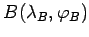
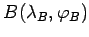
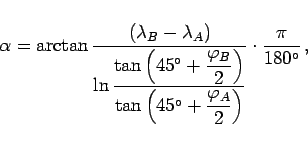

Inhalt Index DeskTop Bronstein

 Geometrie Sphärische Trigonometrie Berechnung sphärischer Dreiecke Loxodrome
Geometrie Sphärische Trigonometrie Berechnung sphärischer Dreiecke Loxodrome


Für den Kurswinkel  der Loxodrome durch die Punkte
der Loxodrome durch die Punkte  und  bzw. durch
und  bzw. durch  und ihren Äquatorschnittpunkt
und ihren Äquatorschnittpunkt  folgt gemäß (3.246b) und (3.246c):
folgt gemäß (3.246b) und (3.246c):
|  | (3.249a) |
| (3.249b) |